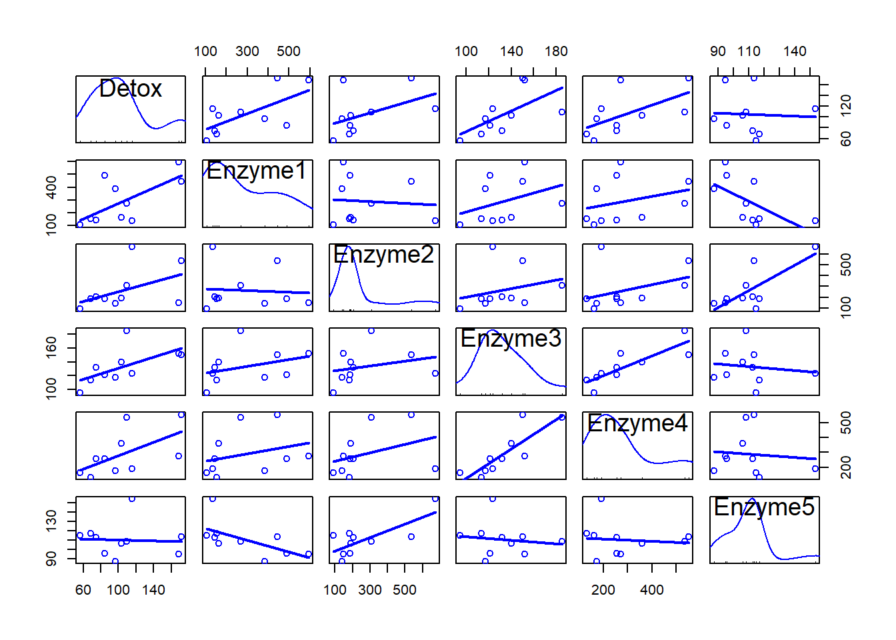

library(RcmdrMisc)Loading required package: carLoading required package: carDataLoading required package: sandwichlibrary(ggplot2)
library(car)
library(MASS)library(RcmdrMisc)Loading required package: carLoading required package: carDataLoading required package: sandwichlibrary(ggplot2)
library(car)
library(MASS)chap7data2 <- read.csv("chap7data2.csv", sep=",", header=T)
chap7data3 <- read.csv("chap7data3.csv", sep=",", header=T)
View(chap7data2)
View(chap7data3)#scatter plot
# Scatter plots of 'Detox' against each enzyme
ggplot(chap7data2, aes(x = Enzyme1, y = Detox)) + geom_point() + ggtitle("Detox vs Enzyme1") +
theme_minimal()ggplot(chap7data2, aes(x = Enzyme2, y = Detox)) + geom_point() + ggtitle("Detox vs Enzyme2") +
theme_minimal()ggplot(chap7data2, aes(x = Enzyme3, y = Detox)) + geom_point() + ggtitle("Detox vs Enzyme3") +
theme_minimal()ggplot(chap7data2, aes(x = Enzyme4, y = Detox)) + geom_point() + ggtitle("Detox vs Enzyme4") +
theme_minimal()ggplot(chap7data2, aes(x = Enzyme5, y = Detox)) + geom_point() + ggtitle("Detox vs Enzyme5") +
theme_minimal()#or
plot(chap7data2)#or
scatterplotMatrix(~Detox + Enzyme1 + Enzyme2 + Enzyme3 + Enzyme4 + Enzyme5,
reg.line = lm,
smooth = FALSE,
spread = FALSE,
span = 0.5,
ellipse = FALSE,
levels = c(0.5, 0.9),
id.n = 0,
diagonal = 'density',
data = chap7data2)Warning in applyDefaults(diagonal, defaults = list(method = "adaptiveDensity"),
: unnamed diag arguments, will be ignoredWarning in plot.window(...): "reg.line" is not a graphical parameterWarning in plot.window(...): "spread" is not a graphical parameterWarning in plot.window(...): "span" is not a graphical parameterWarning in plot.window(...): "levels" is not a graphical parameterWarning in plot.window(...): "id.n" is not a graphical parameterWarning in plot.xy(xy, type, ...): "reg.line" is not a graphical parameterWarning in plot.xy(xy, type, ...): "spread" is not a graphical parameterWarning in plot.xy(xy, type, ...): "span" is not a graphical parameterWarning in plot.xy(xy, type, ...): "levels" is not a graphical parameterWarning in plot.xy(xy, type, ...): "id.n" is not a graphical parameterWarning in title(...): "reg.line" is not a graphical parameterWarning in title(...): "spread" is not a graphical parameterWarning in title(...): "span" is not a graphical parameterWarning in title(...): "levels" is not a graphical parameterWarning in title(...): "id.n" is not a graphical parameterWarning in plot.window(...): "reg.line" is not a graphical parameterWarning in plot.window(...): "spread" is not a graphical parameterWarning in plot.window(...): "span" is not a graphical parameterWarning in plot.window(...): "levels" is not a graphical parameterWarning in plot.window(...): "id.n" is not a graphical parameterWarning in plot.xy(xy, type, ...): "reg.line" is not a graphical parameterWarning in plot.xy(xy, type, ...): "spread" is not a graphical parameterWarning in plot.xy(xy, type, ...): "span" is not a graphical parameterWarning in plot.xy(xy, type, ...): "levels" is not a graphical parameterWarning in plot.xy(xy, type, ...): "id.n" is not a graphical parameterWarning in title(...): "reg.line" is not a graphical parameterWarning in title(...): "spread" is not a graphical parameterWarning in title(...): "span" is not a graphical parameterWarning in title(...): "levels" is not a graphical parameterWarning in title(...): "id.n" is not a graphical parameterWarning in axis(side = side, at = at, labels = labels, ...): "reg.line" is not
a graphical parameterWarning in axis(side = side, at = at, labels = labels, ...): "spread" is not a
graphical parameterWarning in axis(side = side, at = at, labels = labels, ...): "span" is not a
graphical parameterWarning in axis(side = side, at = at, labels = labels, ...): "levels" is not a
graphical parameterWarning in axis(side = side, at = at, labels = labels, ...): "id.n" is not a
graphical parameterWarning in plot.window(...): "reg.line" is not a graphical parameterWarning in plot.window(...): "spread" is not a graphical parameterWarning in plot.window(...): "span" is not a graphical parameterWarning in plot.window(...): "levels" is not a graphical parameterWarning in plot.window(...): "id.n" is not a graphical parameterWarning in plot.xy(xy, type, ...): "reg.line" is not a graphical parameterWarning in plot.xy(xy, type, ...): "spread" is not a graphical parameterWarning in plot.xy(xy, type, ...): "span" is not a graphical parameterWarning in plot.xy(xy, type, ...): "levels" is not a graphical parameterWarning in plot.xy(xy, type, ...): "id.n" is not a graphical parameterWarning in title(...): "reg.line" is not a graphical parameterWarning in title(...): "spread" is not a graphical parameterWarning in title(...): "span" is not a graphical parameterWarning in title(...): "levels" is not a graphical parameterWarning in title(...): "id.n" is not a graphical parameterWarning in plot.window(...): "reg.line" is not a graphical parameterWarning in plot.window(...): "spread" is not a graphical parameterWarning in plot.window(...): "span" is not a graphical parameterWarning in plot.window(...): "levels" is not a graphical parameterWarning in plot.window(...): "id.n" is not a graphical parameterWarning in plot.xy(xy, type, ...): "reg.line" is not a graphical parameterWarning in plot.xy(xy, type, ...): "spread" is not a graphical parameterWarning in plot.xy(xy, type, ...): "span" is not a graphical parameterWarning in plot.xy(xy, type, ...): "levels" is not a graphical parameterWarning in plot.xy(xy, type, ...): "id.n" is not a graphical parameterWarning in title(...): "reg.line" is not a graphical parameterWarning in title(...): "spread" is not a graphical parameterWarning in title(...): "span" is not a graphical parameterWarning in title(...): "levels" is not a graphical parameterWarning in title(...): "id.n" is not a graphical parameterWarning in axis(side = side, at = at, labels = labels, ...): "reg.line" is not
a graphical parameterWarning in axis(side = side, at = at, labels = labels, ...): "spread" is not a
graphical parameterWarning in axis(side = side, at = at, labels = labels, ...): "span" is not a
graphical parameterWarning in axis(side = side, at = at, labels = labels, ...): "levels" is not a
graphical parameterWarning in axis(side = side, at = at, labels = labels, ...): "id.n" is not a
graphical parameterWarning in plot.window(...): "reg.line" is not a graphical parameterWarning in plot.window(...): "spread" is not a graphical parameterWarning in plot.window(...): "span" is not a graphical parameterWarning in plot.window(...): "levels" is not a graphical parameterWarning in plot.window(...): "id.n" is not a graphical parameterWarning in plot.xy(xy, type, ...): "reg.line" is not a graphical parameterWarning in plot.xy(xy, type, ...): "spread" is not a graphical parameterWarning in plot.xy(xy, type, ...): "span" is not a graphical parameterWarning in plot.xy(xy, type, ...): "levels" is not a graphical parameterWarning in plot.xy(xy, type, ...): "id.n" is not a graphical parameterWarning in title(...): "reg.line" is not a graphical parameterWarning in title(...): "spread" is not a graphical parameterWarning in title(...): "span" is not a graphical parameterWarning in title(...): "levels" is not a graphical parameterWarning in title(...): "id.n" is not a graphical parameterWarning in plot.window(...): "reg.line" is not a graphical parameterWarning in plot.window(...): "spread" is not a graphical parameterWarning in plot.window(...): "span" is not a graphical parameterWarning in plot.window(...): "levels" is not a graphical parameterWarning in plot.window(...): "id.n" is not a graphical parameterWarning in plot.xy(xy, type, ...): "reg.line" is not a graphical parameterWarning in plot.xy(xy, type, ...): "spread" is not a graphical parameterWarning in plot.xy(xy, type, ...): "span" is not a graphical parameterWarning in plot.xy(xy, type, ...): "levels" is not a graphical parameterWarning in plot.xy(xy, type, ...): "id.n" is not a graphical parameterWarning in title(...): "reg.line" is not a graphical parameterWarning in title(...): "spread" is not a graphical parameterWarning in title(...): "span" is not a graphical parameterWarning in title(...): "levels" is not a graphical parameterWarning in title(...): "id.n" is not a graphical parameterWarning in axis(side = side, at = at, labels = labels, ...): "reg.line" is not
a graphical parameterWarning in axis(side = side, at = at, labels = labels, ...): "spread" is not a
graphical parameterWarning in axis(side = side, at = at, labels = labels, ...): "span" is not a
graphical parameterWarning in axis(side = side, at = at, labels = labels, ...): "levels" is not a
graphical parameterWarning in axis(side = side, at = at, labels = labels, ...): "id.n" is not a
graphical parameterWarning in axis(side = side, at = at, labels = labels, ...): "reg.line" is not
a graphical parameterWarning in axis(side = side, at = at, labels = labels, ...): "spread" is not a
graphical parameterWarning in axis(side = side, at = at, labels = labels, ...): "span" is not a
graphical parameterWarning in axis(side = side, at = at, labels = labels, ...): "levels" is not a
graphical parameterWarning in axis(side = side, at = at, labels = labels, ...): "id.n" is not a
graphical parameterWarning in plot.window(...): "reg.line" is not a graphical parameterWarning in plot.window(...): "spread" is not a graphical parameterWarning in plot.window(...): "span" is not a graphical parameterWarning in plot.window(...): "levels" is not a graphical parameterWarning in plot.window(...): "id.n" is not a graphical parameterWarning in plot.xy(xy, type, ...): "reg.line" is not a graphical parameterWarning in plot.xy(xy, type, ...): "spread" is not a graphical parameterWarning in plot.xy(xy, type, ...): "span" is not a graphical parameterWarning in plot.xy(xy, type, ...): "levels" is not a graphical parameterWarning in plot.xy(xy, type, ...): "id.n" is not a graphical parameterWarning in title(...): "reg.line" is not a graphical parameterWarning in title(...): "spread" is not a graphical parameterWarning in title(...): "span" is not a graphical parameterWarning in title(...): "levels" is not a graphical parameterWarning in title(...): "id.n" is not a graphical parameterWarning in axis(side = side, at = at, labels = labels, ...): "reg.line" is not
a graphical parameterWarning in axis(side = side, at = at, labels = labels, ...): "spread" is not a
graphical parameterWarning in axis(side = side, at = at, labels = labels, ...): "span" is not a
graphical parameterWarning in axis(side = side, at = at, labels = labels, ...): "levels" is not a
graphical parameterWarning in axis(side = side, at = at, labels = labels, ...): "id.n" is not a
graphical parameterWarning in plot.window(...): "reg.line" is not a graphical parameterWarning in plot.window(...): "spread" is not a graphical parameterWarning in plot.window(...): "span" is not a graphical parameterWarning in plot.window(...): "levels" is not a graphical parameterWarning in plot.window(...): "id.n" is not a graphical parameterWarning in plot.xy(xy, type, ...): "reg.line" is not a graphical parameterWarning in plot.xy(xy, type, ...): "spread" is not a graphical parameterWarning in plot.xy(xy, type, ...): "span" is not a graphical parameterWarning in plot.xy(xy, type, ...): "levels" is not a graphical parameterWarning in plot.xy(xy, type, ...): "id.n" is not a graphical parameterWarning in title(...): "reg.line" is not a graphical parameterWarning in title(...): "spread" is not a graphical parameterWarning in title(...): "span" is not a graphical parameterWarning in title(...): "levels" is not a graphical parameterWarning in title(...): "id.n" is not a graphical parameterWarning in plot.window(...): "reg.line" is not a graphical parameterWarning in plot.window(...): "spread" is not a graphical parameterWarning in plot.window(...): "span" is not a graphical parameterWarning in plot.window(...): "levels" is not a graphical parameterWarning in plot.window(...): "id.n" is not a graphical parameterWarning in plot.xy(xy, type, ...): "reg.line" is not a graphical parameterWarning in plot.xy(xy, type, ...): "spread" is not a graphical parameterWarning in plot.xy(xy, type, ...): "span" is not a graphical parameterWarning in plot.xy(xy, type, ...): "levels" is not a graphical parameterWarning in plot.xy(xy, type, ...): "id.n" is not a graphical parameterWarning in title(...): "reg.line" is not a graphical parameterWarning in title(...): "spread" is not a graphical parameterWarning in title(...): "span" is not a graphical parameterWarning in title(...): "levels" is not a graphical parameterWarning in title(...): "id.n" is not a graphical parameterWarning in plot.window(...): "reg.line" is not a graphical parameterWarning in plot.window(...): "spread" is not a graphical parameterWarning in plot.window(...): "span" is not a graphical parameterWarning in plot.window(...): "levels" is not a graphical parameterWarning in plot.window(...): "id.n" is not a graphical parameterWarning in plot.xy(xy, type, ...): "reg.line" is not a graphical parameterWarning in plot.xy(xy, type, ...): "spread" is not a graphical parameterWarning in plot.xy(xy, type, ...): "span" is not a graphical parameterWarning in plot.xy(xy, type, ...): "levels" is not a graphical parameterWarning in plot.xy(xy, type, ...): "id.n" is not a graphical parameterWarning in title(...): "reg.line" is not a graphical parameterWarning in title(...): "spread" is not a graphical parameterWarning in title(...): "span" is not a graphical parameterWarning in title(...): "levels" is not a graphical parameterWarning in title(...): "id.n" is not a graphical parameterWarning in plot.window(...): "reg.line" is not a graphical parameterWarning in plot.window(...): "spread" is not a graphical parameterWarning in plot.window(...): "span" is not a graphical parameterWarning in plot.window(...): "levels" is not a graphical parameterWarning in plot.window(...): "id.n" is not a graphical parameterWarning in plot.xy(xy, type, ...): "reg.line" is not a graphical parameterWarning in plot.xy(xy, type, ...): "spread" is not a graphical parameterWarning in plot.xy(xy, type, ...): "span" is not a graphical parameterWarning in plot.xy(xy, type, ...): "levels" is not a graphical parameterWarning in plot.xy(xy, type, ...): "id.n" is not a graphical parameterWarning in title(...): "reg.line" is not a graphical parameterWarning in title(...): "spread" is not a graphical parameterWarning in title(...): "span" is not a graphical parameterWarning in title(...): "levels" is not a graphical parameterWarning in title(...): "id.n" is not a graphical parameterWarning in plot.window(...): "reg.line" is not a graphical parameterWarning in plot.window(...): "spread" is not a graphical parameterWarning in plot.window(...): "span" is not a graphical parameterWarning in plot.window(...): "levels" is not a graphical parameterWarning in plot.window(...): "id.n" is not a graphical parameterWarning in plot.xy(xy, type, ...): "reg.line" is not a graphical parameterWarning in plot.xy(xy, type, ...): "spread" is not a graphical parameterWarning in plot.xy(xy, type, ...): "span" is not a graphical parameterWarning in plot.xy(xy, type, ...): "levels" is not a graphical parameterWarning in plot.xy(xy, type, ...): "id.n" is not a graphical parameterWarning in title(...): "reg.line" is not a graphical parameterWarning in title(...): "spread" is not a graphical parameterWarning in title(...): "span" is not a graphical parameterWarning in title(...): "levels" is not a graphical parameterWarning in title(...): "id.n" is not a graphical parameterWarning in plot.window(...): "reg.line" is not a graphical parameterWarning in plot.window(...): "spread" is not a graphical parameterWarning in plot.window(...): "span" is not a graphical parameterWarning in plot.window(...): "levels" is not a graphical parameterWarning in plot.window(...): "id.n" is not a graphical parameterWarning in plot.xy(xy, type, ...): "reg.line" is not a graphical parameterWarning in plot.xy(xy, type, ...): "spread" is not a graphical parameterWarning in plot.xy(xy, type, ...): "span" is not a graphical parameterWarning in plot.xy(xy, type, ...): "levels" is not a graphical parameterWarning in plot.xy(xy, type, ...): "id.n" is not a graphical parameterWarning in title(...): "reg.line" is not a graphical parameterWarning in title(...): "spread" is not a graphical parameterWarning in title(...): "span" is not a graphical parameterWarning in title(...): "levels" is not a graphical parameterWarning in title(...): "id.n" is not a graphical parameterWarning in plot.window(...): "reg.line" is not a graphical parameterWarning in plot.window(...): "spread" is not a graphical parameterWarning in plot.window(...): "span" is not a graphical parameterWarning in plot.window(...): "levels" is not a graphical parameterWarning in plot.window(...): "id.n" is not a graphical parameterWarning in plot.xy(xy, type, ...): "reg.line" is not a graphical parameterWarning in plot.xy(xy, type, ...): "spread" is not a graphical parameterWarning in plot.xy(xy, type, ...): "span" is not a graphical parameterWarning in plot.xy(xy, type, ...): "levels" is not a graphical parameterWarning in plot.xy(xy, type, ...): "id.n" is not a graphical parameterWarning in title(...): "reg.line" is not a graphical parameterWarning in title(...): "spread" is not a graphical parameterWarning in title(...): "span" is not a graphical parameterWarning in title(...): "levels" is not a graphical parameterWarning in title(...): "id.n" is not a graphical parameterWarning in plot.window(...): "reg.line" is not a graphical parameterWarning in plot.window(...): "spread" is not a graphical parameterWarning in plot.window(...): "span" is not a graphical parameterWarning in plot.window(...): "levels" is not a graphical parameterWarning in plot.window(...): "id.n" is not a graphical parameterWarning in plot.xy(xy, type, ...): "reg.line" is not a graphical parameterWarning in plot.xy(xy, type, ...): "spread" is not a graphical parameterWarning in plot.xy(xy, type, ...): "span" is not a graphical parameterWarning in plot.xy(xy, type, ...): "levels" is not a graphical parameterWarning in plot.xy(xy, type, ...): "id.n" is not a graphical parameterWarning in title(...): "reg.line" is not a graphical parameterWarning in title(...): "spread" is not a graphical parameterWarning in title(...): "span" is not a graphical parameterWarning in title(...): "levels" is not a graphical parameterWarning in title(...): "id.n" is not a graphical parameterWarning in plot.window(...): "reg.line" is not a graphical parameterWarning in plot.window(...): "spread" is not a graphical parameterWarning in plot.window(...): "span" is not a graphical parameterWarning in plot.window(...): "levels" is not a graphical parameterWarning in plot.window(...): "id.n" is not a graphical parameterWarning in plot.xy(xy, type, ...): "reg.line" is not a graphical parameterWarning in plot.xy(xy, type, ...): "spread" is not a graphical parameterWarning in plot.xy(xy, type, ...): "span" is not a graphical parameterWarning in plot.xy(xy, type, ...): "levels" is not a graphical parameterWarning in plot.xy(xy, type, ...): "id.n" is not a graphical parameterWarning in title(...): "reg.line" is not a graphical parameterWarning in title(...): "spread" is not a graphical parameterWarning in title(...): "span" is not a graphical parameterWarning in title(...): "levels" is not a graphical parameterWarning in title(...): "id.n" is not a graphical parameterWarning in plot.window(...): "reg.line" is not a graphical parameterWarning in plot.window(...): "spread" is not a graphical parameterWarning in plot.window(...): "span" is not a graphical parameterWarning in plot.window(...): "levels" is not a graphical parameterWarning in plot.window(...): "id.n" is not a graphical parameterWarning in plot.xy(xy, type, ...): "reg.line" is not a graphical parameterWarning in plot.xy(xy, type, ...): "spread" is not a graphical parameterWarning in plot.xy(xy, type, ...): "span" is not a graphical parameterWarning in plot.xy(xy, type, ...): "levels" is not a graphical parameterWarning in plot.xy(xy, type, ...): "id.n" is not a graphical parameterWarning in title(...): "reg.line" is not a graphical parameterWarning in title(...): "spread" is not a graphical parameterWarning in title(...): "span" is not a graphical parameterWarning in title(...): "levels" is not a graphical parameterWarning in title(...): "id.n" is not a graphical parameterWarning in plot.window(...): "reg.line" is not a graphical parameterWarning in plot.window(...): "spread" is not a graphical parameterWarning in plot.window(...): "span" is not a graphical parameterWarning in plot.window(...): "levels" is not a graphical parameterWarning in plot.window(...): "id.n" is not a graphical parameterWarning in plot.xy(xy, type, ...): "reg.line" is not a graphical parameterWarning in plot.xy(xy, type, ...): "spread" is not a graphical parameterWarning in plot.xy(xy, type, ...): "span" is not a graphical parameterWarning in plot.xy(xy, type, ...): "levels" is not a graphical parameterWarning in plot.xy(xy, type, ...): "id.n" is not a graphical parameterWarning in title(...): "reg.line" is not a graphical parameterWarning in title(...): "spread" is not a graphical parameterWarning in title(...): "span" is not a graphical parameterWarning in title(...): "levels" is not a graphical parameterWarning in title(...): "id.n" is not a graphical parameterWarning in axis(side = side, at = at, labels = labels, ...): "reg.line" is not
a graphical parameterWarning in axis(side = side, at = at, labels = labels, ...): "spread" is not a
graphical parameterWarning in axis(side = side, at = at, labels = labels, ...): "span" is not a
graphical parameterWarning in axis(side = side, at = at, labels = labels, ...): "levels" is not a
graphical parameterWarning in axis(side = side, at = at, labels = labels, ...): "id.n" is not a
graphical parameterWarning in plot.window(...): "reg.line" is not a graphical parameterWarning in plot.window(...): "spread" is not a graphical parameterWarning in plot.window(...): "span" is not a graphical parameterWarning in plot.window(...): "levels" is not a graphical parameterWarning in plot.window(...): "id.n" is not a graphical parameterWarning in plot.xy(xy, type, ...): "reg.line" is not a graphical parameterWarning in plot.xy(xy, type, ...): "spread" is not a graphical parameterWarning in plot.xy(xy, type, ...): "span" is not a graphical parameterWarning in plot.xy(xy, type, ...): "levels" is not a graphical parameterWarning in plot.xy(xy, type, ...): "id.n" is not a graphical parameterWarning in title(...): "reg.line" is not a graphical parameterWarning in title(...): "spread" is not a graphical parameterWarning in title(...): "span" is not a graphical parameterWarning in title(...): "levels" is not a graphical parameterWarning in title(...): "id.n" is not a graphical parameterWarning in axis(side = side, at = at, labels = labels, ...): "reg.line" is not
a graphical parameterWarning in axis(side = side, at = at, labels = labels, ...): "spread" is not a
graphical parameterWarning in axis(side = side, at = at, labels = labels, ...): "span" is not a
graphical parameterWarning in axis(side = side, at = at, labels = labels, ...): "levels" is not a
graphical parameterWarning in axis(side = side, at = at, labels = labels, ...): "id.n" is not a
graphical parameterWarning in plot.window(...): "reg.line" is not a graphical parameterWarning in plot.window(...): "spread" is not a graphical parameterWarning in plot.window(...): "span" is not a graphical parameterWarning in plot.window(...): "levels" is not a graphical parameterWarning in plot.window(...): "id.n" is not a graphical parameterWarning in plot.xy(xy, type, ...): "reg.line" is not a graphical parameterWarning in plot.xy(xy, type, ...): "spread" is not a graphical parameterWarning in plot.xy(xy, type, ...): "span" is not a graphical parameterWarning in plot.xy(xy, type, ...): "levels" is not a graphical parameterWarning in plot.xy(xy, type, ...): "id.n" is not a graphical parameterWarning in title(...): "reg.line" is not a graphical parameterWarning in title(...): "spread" is not a graphical parameterWarning in title(...): "span" is not a graphical parameterWarning in title(...): "levels" is not a graphical parameterWarning in title(...): "id.n" is not a graphical parameterWarning in plot.window(...): "reg.line" is not a graphical parameterWarning in plot.window(...): "spread" is not a graphical parameterWarning in plot.window(...): "span" is not a graphical parameterWarning in plot.window(...): "levels" is not a graphical parameterWarning in plot.window(...): "id.n" is not a graphical parameterWarning in plot.xy(xy, type, ...): "reg.line" is not a graphical parameterWarning in plot.xy(xy, type, ...): "spread" is not a graphical parameterWarning in plot.xy(xy, type, ...): "span" is not a graphical parameterWarning in plot.xy(xy, type, ...): "levels" is not a graphical parameterWarning in plot.xy(xy, type, ...): "id.n" is not a graphical parameterWarning in title(...): "reg.line" is not a graphical parameterWarning in title(...): "spread" is not a graphical parameterWarning in title(...): "span" is not a graphical parameterWarning in title(...): "levels" is not a graphical parameterWarning in title(...): "id.n" is not a graphical parameterWarning in plot.window(...): "reg.line" is not a graphical parameterWarning in plot.window(...): "spread" is not a graphical parameterWarning in plot.window(...): "span" is not a graphical parameterWarning in plot.window(...): "levels" is not a graphical parameterWarning in plot.window(...): "id.n" is not a graphical parameterWarning in plot.xy(xy, type, ...): "reg.line" is not a graphical parameterWarning in plot.xy(xy, type, ...): "spread" is not a graphical parameterWarning in plot.xy(xy, type, ...): "span" is not a graphical parameterWarning in plot.xy(xy, type, ...): "levels" is not a graphical parameterWarning in plot.xy(xy, type, ...): "id.n" is not a graphical parameterWarning in title(...): "reg.line" is not a graphical parameterWarning in title(...): "spread" is not a graphical parameterWarning in title(...): "span" is not a graphical parameterWarning in title(...): "levels" is not a graphical parameterWarning in title(...): "id.n" is not a graphical parameterWarning in plot.window(...): "reg.line" is not a graphical parameterWarning in plot.window(...): "spread" is not a graphical parameterWarning in plot.window(...): "span" is not a graphical parameterWarning in plot.window(...): "levels" is not a graphical parameterWarning in plot.window(...): "id.n" is not a graphical parameterWarning in plot.xy(xy, type, ...): "reg.line" is not a graphical parameterWarning in plot.xy(xy, type, ...): "spread" is not a graphical parameterWarning in plot.xy(xy, type, ...): "span" is not a graphical parameterWarning in plot.xy(xy, type, ...): "levels" is not a graphical parameterWarning in plot.xy(xy, type, ...): "id.n" is not a graphical parameterWarning in title(...): "reg.line" is not a graphical parameterWarning in title(...): "spread" is not a graphical parameterWarning in title(...): "span" is not a graphical parameterWarning in title(...): "levels" is not a graphical parameterWarning in title(...): "id.n" is not a graphical parameterWarning in plot.window(...): "reg.line" is not a graphical parameterWarning in plot.window(...): "spread" is not a graphical parameterWarning in plot.window(...): "span" is not a graphical parameterWarning in plot.window(...): "levels" is not a graphical parameterWarning in plot.window(...): "id.n" is not a graphical parameterWarning in plot.xy(xy, type, ...): "reg.line" is not a graphical parameterWarning in plot.xy(xy, type, ...): "spread" is not a graphical parameterWarning in plot.xy(xy, type, ...): "span" is not a graphical parameterWarning in plot.xy(xy, type, ...): "levels" is not a graphical parameterWarning in plot.xy(xy, type, ...): "id.n" is not a graphical parameterWarning in title(...): "reg.line" is not a graphical parameterWarning in title(...): "spread" is not a graphical parameterWarning in title(...): "span" is not a graphical parameterWarning in title(...): "levels" is not a graphical parameterWarning in title(...): "id.n" is not a graphical parameterWarning in plot.window(...): "reg.line" is not a graphical parameterWarning in plot.window(...): "spread" is not a graphical parameterWarning in plot.window(...): "span" is not a graphical parameterWarning in plot.window(...): "levels" is not a graphical parameterWarning in plot.window(...): "id.n" is not a graphical parameterWarning in plot.xy(xy, type, ...): "reg.line" is not a graphical parameterWarning in plot.xy(xy, type, ...): "spread" is not a graphical parameterWarning in plot.xy(xy, type, ...): "span" is not a graphical parameterWarning in plot.xy(xy, type, ...): "levels" is not a graphical parameterWarning in plot.xy(xy, type, ...): "id.n" is not a graphical parameterWarning in title(...): "reg.line" is not a graphical parameterWarning in title(...): "spread" is not a graphical parameterWarning in title(...): "span" is not a graphical parameterWarning in title(...): "levels" is not a graphical parameterWarning in title(...): "id.n" is not a graphical parameterWarning in plot.window(...): "reg.line" is not a graphical parameterWarning in plot.window(...): "spread" is not a graphical parameterWarning in plot.window(...): "span" is not a graphical parameterWarning in plot.window(...): "levels" is not a graphical parameterWarning in plot.window(...): "id.n" is not a graphical parameterWarning in plot.xy(xy, type, ...): "reg.line" is not a graphical parameterWarning in plot.xy(xy, type, ...): "spread" is not a graphical parameterWarning in plot.xy(xy, type, ...): "span" is not a graphical parameterWarning in plot.xy(xy, type, ...): "levels" is not a graphical parameterWarning in plot.xy(xy, type, ...): "id.n" is not a graphical parameterWarning in title(...): "reg.line" is not a graphical parameterWarning in title(...): "spread" is not a graphical parameterWarning in title(...): "span" is not a graphical parameterWarning in title(...): "levels" is not a graphical parameterWarning in title(...): "id.n" is not a graphical parameterWarning in plot.window(...): "reg.line" is not a graphical parameterWarning in plot.window(...): "spread" is not a graphical parameterWarning in plot.window(...): "span" is not a graphical parameterWarning in plot.window(...): "levels" is not a graphical parameterWarning in plot.window(...): "id.n" is not a graphical parameterWarning in plot.xy(xy, type, ...): "reg.line" is not a graphical parameterWarning in plot.xy(xy, type, ...): "spread" is not a graphical parameterWarning in plot.xy(xy, type, ...): "span" is not a graphical parameterWarning in plot.xy(xy, type, ...): "levels" is not a graphical parameterWarning in plot.xy(xy, type, ...): "id.n" is not a graphical parameterWarning in title(...): "reg.line" is not a graphical parameterWarning in title(...): "spread" is not a graphical parameterWarning in title(...): "span" is not a graphical parameterWarning in title(...): "levels" is not a graphical parameterWarning in title(...): "id.n" is not a graphical parameterWarning in plot.window(...): "reg.line" is not a graphical parameterWarning in plot.window(...): "spread" is not a graphical parameterWarning in plot.window(...): "span" is not a graphical parameterWarning in plot.window(...): "levels" is not a graphical parameterWarning in plot.window(...): "id.n" is not a graphical parameterWarning in plot.xy(xy, type, ...): "reg.line" is not a graphical parameterWarning in plot.xy(xy, type, ...): "spread" is not a graphical parameterWarning in plot.xy(xy, type, ...): "span" is not a graphical parameterWarning in plot.xy(xy, type, ...): "levels" is not a graphical parameterWarning in plot.xy(xy, type, ...): "id.n" is not a graphical parameterWarning in title(...): "reg.line" is not a graphical parameterWarning in title(...): "spread" is not a graphical parameterWarning in title(...): "span" is not a graphical parameterWarning in title(...): "levels" is not a graphical parameterWarning in title(...): "id.n" is not a graphical parameterWarning in plot.window(...): "reg.line" is not a graphical parameterWarning in plot.window(...): "spread" is not a graphical parameterWarning in plot.window(...): "span" is not a graphical parameterWarning in plot.window(...): "levels" is not a graphical parameterWarning in plot.window(...): "id.n" is not a graphical parameterWarning in plot.xy(xy, type, ...): "reg.line" is not a graphical parameterWarning in plot.xy(xy, type, ...): "spread" is not a graphical parameterWarning in plot.xy(xy, type, ...): "span" is not a graphical parameterWarning in plot.xy(xy, type, ...): "levels" is not a graphical parameterWarning in plot.xy(xy, type, ...): "id.n" is not a graphical parameterWarning in title(...): "reg.line" is not a graphical parameterWarning in title(...): "spread" is not a graphical parameterWarning in title(...): "span" is not a graphical parameterWarning in title(...): "levels" is not a graphical parameterWarning in title(...): "id.n" is not a graphical parameterWarning in plot.window(...): "reg.line" is not a graphical parameterWarning in plot.window(...): "spread" is not a graphical parameterWarning in plot.window(...): "span" is not a graphical parameterWarning in plot.window(...): "levels" is not a graphical parameterWarning in plot.window(...): "id.n" is not a graphical parameterWarning in plot.xy(xy, type, ...): "reg.line" is not a graphical parameterWarning in plot.xy(xy, type, ...): "spread" is not a graphical parameterWarning in plot.xy(xy, type, ...): "span" is not a graphical parameterWarning in plot.xy(xy, type, ...): "levels" is not a graphical parameterWarning in plot.xy(xy, type, ...): "id.n" is not a graphical parameterWarning in title(...): "reg.line" is not a graphical parameterWarning in title(...): "spread" is not a graphical parameterWarning in title(...): "span" is not a graphical parameterWarning in title(...): "levels" is not a graphical parameterWarning in title(...): "id.n" is not a graphical parameterWarning in axis(side = side, at = at, labels = labels, ...): "reg.line" is not
a graphical parameterWarning in axis(side = side, at = at, labels = labels, ...): "spread" is not a
graphical parameterWarning in axis(side = side, at = at, labels = labels, ...): "span" is not a
graphical parameterWarning in axis(side = side, at = at, labels = labels, ...): "levels" is not a
graphical parameterWarning in axis(side = side, at = at, labels = labels, ...): "id.n" is not a
graphical parameterWarning in plot.window(...): "reg.line" is not a graphical parameterWarning in plot.window(...): "spread" is not a graphical parameterWarning in plot.window(...): "span" is not a graphical parameterWarning in plot.window(...): "levels" is not a graphical parameterWarning in plot.window(...): "id.n" is not a graphical parameterWarning in plot.xy(xy, type, ...): "reg.line" is not a graphical parameterWarning in plot.xy(xy, type, ...): "spread" is not a graphical parameterWarning in plot.xy(xy, type, ...): "span" is not a graphical parameterWarning in plot.xy(xy, type, ...): "levels" is not a graphical parameterWarning in plot.xy(xy, type, ...): "id.n" is not a graphical parameterWarning in title(...): "reg.line" is not a graphical parameterWarning in title(...): "spread" is not a graphical parameterWarning in title(...): "span" is not a graphical parameterWarning in title(...): "levels" is not a graphical parameterWarning in title(...): "id.n" is not a graphical parameterWarning in axis(side = side, at = at, labels = labels, ...): "reg.line" is not
a graphical parameterWarning in axis(side = side, at = at, labels = labels, ...): "spread" is not a
graphical parameterWarning in axis(side = side, at = at, labels = labels, ...): "span" is not a
graphical parameterWarning in axis(side = side, at = at, labels = labels, ...): "levels" is not a
graphical parameterWarning in axis(side = side, at = at, labels = labels, ...): "id.n" is not a
graphical parameterWarning in axis(side = side, at = at, labels = labels, ...): "reg.line" is not
a graphical parameterWarning in axis(side = side, at = at, labels = labels, ...): "spread" is not a
graphical parameterWarning in axis(side = side, at = at, labels = labels, ...): "span" is not a
graphical parameterWarning in axis(side = side, at = at, labels = labels, ...): "levels" is not a
graphical parameterWarning in axis(side = side, at = at, labels = labels, ...): "id.n" is not a
graphical parameterWarning in plot.window(...): "reg.line" is not a graphical parameterWarning in plot.window(...): "spread" is not a graphical parameterWarning in plot.window(...): "span" is not a graphical parameterWarning in plot.window(...): "levels" is not a graphical parameterWarning in plot.window(...): "id.n" is not a graphical parameterWarning in plot.xy(xy, type, ...): "reg.line" is not a graphical parameterWarning in plot.xy(xy, type, ...): "spread" is not a graphical parameterWarning in plot.xy(xy, type, ...): "span" is not a graphical parameterWarning in plot.xy(xy, type, ...): "levels" is not a graphical parameterWarning in plot.xy(xy, type, ...): "id.n" is not a graphical parameterWarning in title(...): "reg.line" is not a graphical parameterWarning in title(...): "spread" is not a graphical parameterWarning in title(...): "span" is not a graphical parameterWarning in title(...): "levels" is not a graphical parameterWarning in title(...): "id.n" is not a graphical parameterWarning in plot.window(...): "reg.line" is not a graphical parameterWarning in plot.window(...): "spread" is not a graphical parameterWarning in plot.window(...): "span" is not a graphical parameterWarning in plot.window(...): "levels" is not a graphical parameterWarning in plot.window(...): "id.n" is not a graphical parameterWarning in plot.xy(xy, type, ...): "reg.line" is not a graphical parameterWarning in plot.xy(xy, type, ...): "spread" is not a graphical parameterWarning in plot.xy(xy, type, ...): "span" is not a graphical parameterWarning in plot.xy(xy, type, ...): "levels" is not a graphical parameterWarning in plot.xy(xy, type, ...): "id.n" is not a graphical parameterWarning in title(...): "reg.line" is not a graphical parameterWarning in title(...): "spread" is not a graphical parameterWarning in title(...): "span" is not a graphical parameterWarning in title(...): "levels" is not a graphical parameterWarning in title(...): "id.n" is not a graphical parameterWarning in axis(side = side, at = at, labels = labels, ...): "reg.line" is not
a graphical parameterWarning in axis(side = side, at = at, labels = labels, ...): "spread" is not a
graphical parameterWarning in axis(side = side, at = at, labels = labels, ...): "span" is not a
graphical parameterWarning in axis(side = side, at = at, labels = labels, ...): "levels" is not a
graphical parameterWarning in axis(side = side, at = at, labels = labels, ...): "id.n" is not a
graphical parameterWarning in plot.window(...): "reg.line" is not a graphical parameterWarning in plot.window(...): "spread" is not a graphical parameterWarning in plot.window(...): "span" is not a graphical parameterWarning in plot.window(...): "levels" is not a graphical parameterWarning in plot.window(...): "id.n" is not a graphical parameterWarning in plot.xy(xy, type, ...): "reg.line" is not a graphical parameterWarning in plot.xy(xy, type, ...): "spread" is not a graphical parameterWarning in plot.xy(xy, type, ...): "span" is not a graphical parameterWarning in plot.xy(xy, type, ...): "levels" is not a graphical parameterWarning in plot.xy(xy, type, ...): "id.n" is not a graphical parameterWarning in title(...): "reg.line" is not a graphical parameterWarning in title(...): "spread" is not a graphical parameterWarning in title(...): "span" is not a graphical parameterWarning in title(...): "levels" is not a graphical parameterWarning in title(...): "id.n" is not a graphical parameterWarning in plot.window(...): "reg.line" is not a graphical parameterWarning in plot.window(...): "spread" is not a graphical parameterWarning in plot.window(...): "span" is not a graphical parameterWarning in plot.window(...): "levels" is not a graphical parameterWarning in plot.window(...): "id.n" is not a graphical parameterWarning in plot.xy(xy, type, ...): "reg.line" is not a graphical parameterWarning in plot.xy(xy, type, ...): "spread" is not a graphical parameterWarning in plot.xy(xy, type, ...): "span" is not a graphical parameterWarning in plot.xy(xy, type, ...): "levels" is not a graphical parameterWarning in plot.xy(xy, type, ...): "id.n" is not a graphical parameterWarning in title(...): "reg.line" is not a graphical parameterWarning in title(...): "spread" is not a graphical parameterWarning in title(...): "span" is not a graphical parameterWarning in title(...): "levels" is not a graphical parameterWarning in title(...): "id.n" is not a graphical parameterWarning in axis(side = side, at = at, labels = labels, ...): "reg.line" is not
a graphical parameterWarning in axis(side = side, at = at, labels = labels, ...): "spread" is not a
graphical parameterWarning in axis(side = side, at = at, labels = labels, ...): "span" is not a
graphical parameterWarning in axis(side = side, at = at, labels = labels, ...): "levels" is not a
graphical parameterWarning in axis(side = side, at = at, labels = labels, ...): "id.n" is not a
graphical parameterWarning in plot.window(...): "reg.line" is not a graphical parameterWarning in plot.window(...): "spread" is not a graphical parameterWarning in plot.window(...): "span" is not a graphical parameterWarning in plot.window(...): "levels" is not a graphical parameterWarning in plot.window(...): "id.n" is not a graphical parameterWarning in plot.xy(xy, type, ...): "reg.line" is not a graphical parameterWarning in plot.xy(xy, type, ...): "spread" is not a graphical parameterWarning in plot.xy(xy, type, ...): "span" is not a graphical parameterWarning in plot.xy(xy, type, ...): "levels" is not a graphical parameterWarning in plot.xy(xy, type, ...): "id.n" is not a graphical parameterWarning in title(...): "reg.line" is not a graphical parameterWarning in title(...): "spread" is not a graphical parameterWarning in title(...): "span" is not a graphical parameterWarning in title(...): "levels" is not a graphical parameterWarning in title(...): "id.n" is not a graphical parameter
This document provides an interpretation of the scatterplot matrix that includes the response variable (Detox) and explanatory variables (Enzyme1, Enzyme2, Enzyme3, Enzyme4, and Enzyme5). The scatterplot matrix is used to visualize the relationships between these variables and identify potential correlations.
Detox and Each EnzymeDetox vs. Enzyme1:
There is a positive linear relationship, as indicated by the upward trend in the scatter plot. The regression line is slightly upward, and the points are moderately scattered around it, suggesting a moderate positive correlation.
Detox vs. Enzyme2:
The scatter plot shows a very weak relationship with a mostly horizontal regression line. The points are widely scattered without any discernible pattern, suggesting little to no linear relationship between Detox and Enzyme2.
Detox vs. Enzyme3:
The plot shows a positive linear relationship, as evidenced by the upward trend and a moderately steep regression line. Points are somewhat dispersed, but there is a noticeable trend suggesting a moderate positive correlation.
Detox vs. Enzyme4:
There appears to be a slight negative linear relationship. The regression line slopes downward, but the points are widely scattered. This suggests a weak negative correlation between Detox and Enzyme4.
Detox vs. Enzyme5:
The scatter plot indicates a weak relationship with a relatively flat regression line. The points are fairly scattered, with no clear trend, suggesting little to no linear correlation between Detox and Enzyme5.
Enzyme1 to Enzyme5)Enzyme1 vs. Enzyme2:
There is a noticeable positive linear relationship with an upward trend. The regression line is moderately steep, and points are clustered around it, indicating a moderate positive correlation.
Enzyme1 vs. Enzyme3, Enzyme4, Enzyme5:
All these plots show relatively moderate positive linear relationships, with upward trends and points moderately clustered around the regression lines.
Enzyme2 vs. Enzyme3:
The relationship appears to be non-linear, with points forming a curved pattern. This suggests a non-linear relationship between Enzyme2 and Enzyme3.
Enzyme2 vs. Enzyme4, Enzyme5:
These plots show no clear pattern, suggesting little to no linear relationship between Enzyme2 and either Enzyme4 or Enzyme5.
Enzyme3 vs. Enzyme4:
There seems to be a positive relationship with an upward trend in the scatter plot, though the points are somewhat scattered, indicating a moderate positive correlation.
Enzyme3 vs. Enzyme5:
Shows a weak or no discernible relationship, with the points widely scattered around a flat regression line.
Enzyme4 vs. Enzyme5:
No clear relationship is observed here, as the points are scattered without any noticeable pattern.
Detox appears to have a somewhat skewed distribution, possibly slightly left-skewed.Enzyme1 and Enzyme3 appear to be normally distributed with slight variation.Enzyme2 shows a highly skewed distribution with a long tail.Enzyme4 and Enzyme5 show more uniform distributions with less obvious skewness.Detox has a moderate positive relationship with Enzyme1 and Enzyme3, suggesting these enzymes might be more influential in predicting Detox levels.Enzyme2 and Enzyme5 appear to have little to no linear relationship with Detox.Enzyme1 with Enzyme2), and some non-linear or weak relationships.chap7data2.model1 <- lm(Detox~.,data=chap7data2)
summary(chap7data2.model1)
Call:
lm(formula = Detox ~ ., data = chap7data2)
Residuals:
1 2 3 4 5 6 7 8
2.7526 -3.0631 -0.8577 -2.1760 6.2696 21.6524 -36.4182 11.8682
9 10
-19.7684 19.7406
Coefficients:
Estimate Std. Error t value Pr(>|t|)
(Intercept) -87.96535 189.66881 -0.464 0.667
Enzyme1 0.17063 0.10045 1.699 0.165
Enzyme2 0.03305 0.14039 0.235 0.825
Enzyme3 0.31844 0.67350 0.473 0.661
Enzyme4 0.04325 0.13468 0.321 0.764
Enzyme5 0.72460 1.69421 0.428 0.691
Residual standard error: 26.35 on 4 degrees of freedom
Multiple R-squared: 0.798, Adjusted R-squared: 0.5455
F-statistic: 3.161 on 5 and 4 DF, p-value: 0.1439allSubsets <- function(data,y.name="Y",perf.measure=c("adj.r.squared","r.squared","AIC","perc.error")){
Cols <- names(data)
Cols <- Cols[! Cols %in% y.name]
n <- length(Cols)
id <- unlist(
lapply(1:n,
function(i)combn(1:n,i,simplify=F)
)
,recursive=F)
Formulas <- sapply(id,function(i)
paste(y.name,"~",paste(Cols[i],collapse="+"))
)
result.mat <- matrix(0,nrow=length(Formulas),6)
result.mat[,1] <- Formulas
#get all adjusted R2 values
for(i in 1:length(Formulas)){result.mat[i,2] <- summary(lm(as.formula(Formulas[i]),
data=data))$adj.r.squared}
#get all R2 values
for(i in 1:length(Formulas)){result.mat[i,3] <- summary(lm(as.formula(Formulas[i]),
data=data))$r.squared}
#get all AIC's
for(i in 1:length(Formulas)){result.mat[i,4] <- AIC(lm(as.formula(Formulas[i]),
data=data))}
#get all sigma's
for(i in 1:length(Formulas)){result.mat[i,5] <- summary(lm(as.formula(Formulas[i]),
data=data))$sigma/mean(data[,y.name])}
#get all mallows cp's
for(i in 1:length(Formulas)){result.mat[i,6] <- mallows.cp(data=data,model=lm(as.formula(Formulas[i]),
data=data),y.name=y.name)}
colnames(result.mat) <- c("Model","adj.r.squared","r.squared","AIC","perc.error","mallows.cp")
final.output <- data.frame(result.mat[order(result.mat[,perf.measure],decreasing=T),])
return(final.output)
}mallows.cp <- function(data,model,y.name)
{
n <- nrow(data)
p <- length(model$coefficients)
mean.sq.error <- summary(lm(as.formula(paste(y.name,"~.")),data=data))$sigma^2
sse <- summary(model)$sigma^2*summary(model)$df[2]
cp <- sse/mean.sq.error-(n-2*p)
cp/100
}stepwise(chap7data2.model1, direction='backward/forward', criterion='AIC')
Direction: backward/forward
Criterion: AIC
Start: AIC=68.27
Detox ~ Enzyme1 + Enzyme2 + Enzyme3 + Enzyme4 + Enzyme5
Df Sum of Sq RSS AIC
- Enzyme2 1 38.50 2816.7 66.407
- Enzyme4 1 71.60 2849.8 66.524
- Enzyme5 1 127.05 2905.2 66.717
- Enzyme3 1 155.27 2933.4 66.813
<none> 2778.2 68.270
- Enzyme1 1 2004.15 4782.3 71.701
Step: AIC=66.41
Detox ~ Enzyme1 + Enzyme3 + Enzyme4 + Enzyme5
Df Sum of Sq RSS AIC
- Enzyme3 1 130.4 2947.1 64.860
- Enzyme4 1 221.1 3037.8 65.163
<none> 2816.7 66.407
+ Enzyme2 1 38.5 2778.2 68.270
- Enzyme5 1 2216.4 5033.0 70.212
- Enzyme1 1 5478.4 8295.1 75.208
Step: AIC=64.86
Detox ~ Enzyme1 + Enzyme4 + Enzyme5
Df Sum of Sq RSS AIC
<none> 2947.1 64.860
+ Enzyme3 1 130.4 2816.7 66.407
+ Enzyme2 1 13.6 2933.4 66.813
- Enzyme4 1 1837.7 4784.8 67.706
- Enzyme5 1 2262.8 5209.8 68.557
- Enzyme1 1 6029.0 8976.1 73.997
Call:
lm(formula = Detox ~ Enzyme1 + Enzyme4 + Enzyme5, data = chap7data2)
Coefficients:
(Intercept) Enzyme1 Enzyme4 Enzyme5
-102.4349 0.1938 0.1008 1.1069 #or
allSubsets(chap7data2,y.name="Detox",perf.measure="mallows.cp") Model adj.r.squared
1 Detox ~ Enzyme5 -0.121740174648695
2 Detox ~ Enzyme3+Enzyme4+Enzyme5 0.0953356909980044
3 Detox ~ Enzyme2 0.121913336927653
4 Detox ~ Enzyme4+Enzyme5 0.16091426388108
5 Detox ~ Enzyme2+Enzyme3+Enzyme4 0.220935843219152
6 Detox ~ Enzyme3+Enzyme5 0.202661735249138
7 Detox ~ Enzyme3+Enzyme4 0.223753049711396
8 Detox ~ Enzyme2+Enzyme4 0.255553133684301
9 Detox ~ Enzyme4 0.265785404743971
10 Detox ~ Enzyme2+Enzyme3+Enzyme4+Enzyme5 0.374128029592512
11 Detox ~ Enzyme2+Enzyme3 0.329335344543953
12 Detox ~ Enzyme3 0.301375192960427
13 Detox ~ Enzyme1+Enzyme2+Enzyme3+Enzyme4+Enzyme5 0.54551810809289
14 Detox ~ Enzyme2+Enzyme4+Enzyme5 0.404467243817661
15 Detox ~ Enzyme1+Enzyme3+Enzyme4 0.451096799223505
16 Detox ~ Enzyme2+Enzyme3+Enzyme5 0.46270944285908
17 Detox ~ Enzyme1 0.384163301765189
18 Detox ~ Enzyme1+Enzyme2+Enzyme4+Enzyme5 0.616094255366656
19 Detox ~ Enzyme1+Enzyme2+Enzyme3+Enzyme4 0.619787416838814
20 Detox ~ Enzyme1+Enzyme2+Enzyme3+Enzyme5 0.627043441524617
21 Detox ~ Enzyme2+Enzyme5 0.476586035306095
22 Detox ~ Enzyme1+Enzyme3+Enzyme4+Enzyme5 0.631375639659066
23 Detox ~ Enzyme1+Enzyme3 0.505130867699246
24 Detox ~ Enzyme1+Enzyme4 0.512984256086067
25 Detox ~ Enzyme1+Enzyme2+Enzyme5 0.589864494082874
26 Detox ~ Enzyme1+Enzyme5 0.552720532095238
27 Detox ~ Enzyme1+Enzyme2+Enzyme4 0.658170511105981
28 Detox ~ Enzyme1+Enzyme3+Enzyme5 0.668698598042593
29 Detox ~ Enzyme1+Enzyme4+Enzyme5 0.678591090390398
30 Detox ~ Enzyme1+Enzyme2+Enzyme3 0.682256480210184
31 Detox ~ Enzyme1+Enzyme2 0.646870701721216
r.squared AIC perc.error mallows.cp
1 0.0028976225344936 106.614682983029 0.39431982572297 0.137453882255527
2 0.396890460665336 105.587136855917 0.354116533733155 0.0994323899514434
3 0.219478521713469 104.165771062923 0.348876057988313 0.0945648667123251
4 0.347377760796396 104.376133095174 0.341040255742936 0.0892372756191775
5 0.480623895479435 104.092431403323 0.328616289784617 0.0828508511322706
6 0.379848016304885 103.865794310814 0.332448041968861 0.0828072658700512
7 0.396252371997752 103.597711242751 0.328021590110949 0.0795587491774218
8 0.420985770643346 103.179419011073 0.321232390178822 0.074660851334314
9 0.347364804216863 102.376331624279 0.319017114715357 0.0692398413807154
10 0.652293349773618 102.079740132558 0.294540640692888 0.0688555453531038
11 0.478371934645297 102.135696635339 0.304898428354942 0.0632968017381836
12 0.37900017152038 101.879456538239 0.311189172259715 0.0629751626156955
13 0.798008048041284 98.6484270290975 0.250992513755551 0.06
14 0.602978162545108 101.406061334488 0.287313017352848 0.0586213180485603
15 0.63406453281567 100.590718467776 0.27583562615466 0.0524653558987582
16 0.641806295239386 100.376887629136 0.272902227212976 0.0509322725558538
17 0.452589601569056 100.618136405545 0.292169756597092 0.0484024176453974
18 0.786719030759254 97.1922524896298 0.230682570166493 0.0422355380345724
19 0.788770787132675 97.0955870885837 0.22957030910281 0.0418292334558949
20 0.79280191195812 96.9029013083644 0.227369182566776 0.041030959111525
21 0.592900249682518 99.6567309027967 0.269355054023775 0.0406170238704733
22 0.795208688699481 96.7860631506573 0.226044785017069 0.0405543506688574
23 0.615101785988302 99.0959376823384 0.261907333353099 0.0362205048823659
24 0.62120997695583 98.9359687073529 0.259820836463091 0.0350109139242518
25 0.726576329388583 97.6763734731404 0.238432888587324 0.034145458363074
26 0.652115969407407 98.0848402690308 0.248995763195505 0.0288906715775875
27 0.772113674070654 95.8546178223231 0.21767434129564 0.0251278031069124
28 0.779132398695062 95.5417828096502 0.214296023808806 0.0237379012704586
29 0.785727393593599 95.2386391415135 0.211072391978277 0.0224319096535481
30 0.788170986806789 95.1239425579172 0.209865392142655 0.0219480105299455
31 0.725343879116501 95.7213469375342 0.221242904754148 0.0143895176456604The stepwise regression analysis identified that the best model for predicting Detox includes the variables Enzyme1, Enzyme4, and Enzyme5. This model was chosen because it has the lowest Akaike Information Criterion (AIC) value (64.86), indicating the best balance between model complexity and fit.
Detox, while Enzyme5 has a larger positive effect.Enzyme2 and Enzyme3 were excluded from the final model as they did not significantly improve the models fit.This suggests that Enzyme1, Enzyme4, and Enzyme5 are the most important predictors of Detox in this dataset.
Based on the regression analysis and the adjusted R-squared values for various models, the following conclusions can be drawn:
Best Model: The model Detox ~ Enzyme1 + Enzyme2 + Enzyme3 has the highest adjusted R-squared value of 0.6823. This indicates that it explains about 68.23% of the variability in Detox and is the best model among all those considered in terms of fit.
Other Notable Models:
Detox ~ Enzyme1 + Enzyme2 + Enzyme5 (Adjusted R-squared: 0.6687) and Detox ~ Enzyme1 + Enzyme2 + Enzyme4 (Adjusted R-squared: 0.6582) also have high adjusted R-squared values. These models provide a good fit and are close in performance to the best model.Poorly Performing Models:
Detox ~ Enzyme5 (-0.1217) and Detox ~ Enzyme3 (0.3014), indicate a poor fit. These models do not explain much of the variability in Detox and are not suitable for prediction.Model Selection:
Detox are:
Detox ~ Enzyme1 + Enzyme2 + Enzyme3 (Adjusted R-squared: 0.6823)Detox ~ Enzyme1 + Enzyme2 + Enzyme5 (Adjusted R-squared: 0.6687)Detox ~ Enzyme1 + Enzyme2 + Enzyme4 (Adjusted R-squared: 0.6582)The best model based on adjusted R-squared is Detox ~ Enzyme1 + Enzyme2 + Enzyme3, which explains 68.23% of the variance in Detox. Models with fewer variables generally have lower adjusted R-squared values and may not provide sufficient explanatory power, while models with negative adjusted R-squared values should be discarded as they do not fit the data well.
chap7data3.model1 <- lm(Y~.,data=chap7data3)
#chap7data3.model1 <- lm(Y~X1+X2+X3+X4,data=chap7data3)
summary(chap7data3.model1)
Call:
lm(formula = Y ~ ., data = chap7data3)
Residuals:
Min 1Q Median 3Q Max
-3.1750 -1.6709 0.2508 1.3783 3.9254
Coefficients:
Estimate Std. Error t value Pr(>|t|)
(Intercept) 62.4054 70.0710 0.891 0.3991
X1 1.5511 0.7448 2.083 0.0708 .
X2 0.5102 0.7238 0.705 0.5009
X3 0.1019 0.7547 0.135 0.8959
X4 -0.1441 0.7091 -0.203 0.8441
---
Signif. codes: 0 '***' 0.001 '**' 0.01 '*' 0.05 '.' 0.1 ' ' 1
Residual standard error: 2.446 on 8 degrees of freedom
Multiple R-squared: 0.9824, Adjusted R-squared: 0.9736
F-statistic: 111.5 on 4 and 8 DF, p-value: 4.756e-07vif(chap7data3.model1) X1 X2 X3 X4
38.49621 254.42317 46.86839 282.51286 base::plot(chap7data3)stepwise(chap7data3.model1, direction='backward', criterion='AIC')
Direction: backward
Criterion: AIC
Start: AIC=26.94
Y ~ X1 + X2 + X3 + X4
Df Sum of Sq RSS AIC
- X3 1 0.1091 47.973 24.974
- X4 1 0.2470 48.111 25.011
- X2 1 2.9725 50.836 25.728
<none> 47.864 26.944
- X1 1 25.9509 73.815 30.576
Step: AIC=24.97
Y ~ X1 + X2 + X4
Df Sum of Sq RSS AIC
<none> 47.97 24.974
- X4 1 9.93 57.90 25.420
- X2 1 26.79 74.76 28.742
- X1 1 820.91 868.88 60.629
Call:
lm(formula = Y ~ X1 + X2 + X4, data = chap7data3)
Coefficients:
(Intercept) X1 X2 X4
71.6483 1.4519 0.4161 -0.2365 stepwise(chap7data3.model1, direction='forward', criterion='AIC')
Direction: forward
Criterion: AIC
Start: AIC=71.44
Y ~ 1
Df Sum of Sq RSS AIC
+ X4 1 1831.90 883.87 58.852
+ X2 1 1809.43 906.34 59.178
+ X1 1 1450.08 1265.69 63.519
+ X3 1 776.36 1939.40 69.067
<none> 2715.76 71.444
Step: AIC=58.85
Y ~ X4
Df Sum of Sq RSS AIC
+ X1 1 809.10 74.76 28.742
+ X3 1 708.13 175.74 39.853
<none> 883.87 58.852
+ X2 1 14.99 868.88 60.629
Step: AIC=28.74
Y ~ X4 + X1
Df Sum of Sq RSS AIC
+ X2 1 26.789 47.973 24.974
+ X3 1 23.926 50.836 25.728
<none> 74.762 28.742
Step: AIC=24.97
Y ~ X4 + X1 + X2
Df Sum of Sq RSS AIC
<none> 47.973 24.974
+ X3 1 0.10909 47.864 26.944
Call:
lm(formula = Y ~ X4 + X1 + X2, data = chap7data3)
Coefficients:
(Intercept) X4 X1 X2
71.6483 -0.2365 1.4519 0.4161 stepwise(chap7data3.model1, direction='backward/forward', criterion='AIC')
Direction: backward/forward
Criterion: AIC
Start: AIC=26.94
Y ~ X1 + X2 + X3 + X4
Df Sum of Sq RSS AIC
- X3 1 0.1091 47.973 24.974
- X4 1 0.2470 48.111 25.011
- X2 1 2.9725 50.836 25.728
<none> 47.864 26.944
- X1 1 25.9509 73.815 30.576
Step: AIC=24.97
Y ~ X1 + X2 + X4
Df Sum of Sq RSS AIC
<none> 47.97 24.974
- X4 1 9.93 57.90 25.420
+ X3 1 0.11 47.86 26.944
- X2 1 26.79 74.76 28.742
- X1 1 820.91 868.88 60.629
Call:
lm(formula = Y ~ X1 + X2 + X4, data = chap7data3)
Coefficients:
(Intercept) X1 X2 X4
71.6483 1.4519 0.4161 -0.2365 allSubsets(chap7data3,y.name="Y",perf.measure="adj.r.squared") Model adj.r.squared r.squared AIC
1 Y ~ X1+X2+X4 0.976447268267236 0.982335451200427 63.8662854718626
2 Y ~ X1+X2+X3 0.976379572292115 0.982284679219087 63.9035968705951
3 Y ~ X1+X3+X4 0.975041456783125 0.981281092587343 64.6199522325816
4 Y ~ X1+X2 0.974414049442758 0.978678374535632 64.3123927621906
5 Y ~ X1+X2+X3+X4 0.97356343061152 0.98237562040768 65.8366897916517
6 Y ~ X1+X4 0.966965257260317 0.972471047716931 67.6341062672404
7 Y ~ X2+X3+X4 0.963759945848363 0.972819959386272 69.468286610933
8 Y ~ X3+X4 0.922347568738969 0.935289640615807 78.744985808948
9 Y ~ X2+X3 0.816430499370665 0.847025416142221 89.9295421295082
10 Y ~ X4 0.644954869961756 0.674541964131609 97.7440447788562
11 Y ~ X2 0.63592900832723 0.666268257633294 98.0703964203777
12 Y ~ X2+X4 0.61607248954006 0.68006040795005 99.5217275129777
13 Y ~ X1 0.491579662365491 0.533948023835033 102.41187201392
14 Y ~ X1+X3 0.457800098613821 0.548166748844851 104.009080451406
15 Y ~ X3 0.220952070432522 0.285872731229812 107.959804394717
perc.error mallows.cp
1 0.0241948282253226 0.0301823347348734
2 0.0242295740305319 0.0304127972306419
3 0.0249064320090681 0.0349682444234851
4 0.0252175376870345 0.0267824159831842
5 0.0256332957861164 0.05
6 0.0286541391065289 0.0549585082475868
7 0.0300120954747619 0.0733747399565644
8 0.0439318436492178 0.223731119646975
9 0.0675463931752181 0.624377163435314
10 0.0939385128212314 1.38730833491677
11 0.095125058915528 1.42486406936961
12 0.0976846931820687 1.38225919754642
13 0.112412176793213 2.0254876912345
14 0.116086473289248 1.98094652569577
15 0.139150249457931 3.15154284140081chap7data3.model2 <- lm(Y ~ X1 + X2 + X4,data=chap7data3)
summary(chap7data3.model2)
Call:
lm(formula = Y ~ X1 + X2 + X4, data = chap7data3)
Residuals:
Min 1Q Median 3Q Max
-3.0919 -1.8016 0.2562 1.2818 3.8982
Coefficients:
Estimate Std. Error t value Pr(>|t|)
(Intercept) 71.6483 14.1424 5.066 0.000675 ***
X1 1.4519 0.1170 12.410 5.78e-07 ***
X2 0.4161 0.1856 2.242 0.051687 .
X4 -0.2365 0.1733 -1.365 0.205395
---
Signif. codes: 0 '***' 0.001 '**' 0.01 '*' 0.05 '.' 0.1 ' ' 1
Residual standard error: 2.309 on 9 degrees of freedom
Multiple R-squared: 0.9823, Adjusted R-squared: 0.9764
F-statistic: 166.8 on 3 and 9 DF, p-value: 3.323e-08vif(chap7data3.model2) X1 X2 X4
1.06633 18.78031 18.94008 chap7data3.model3 <- lm(Y ~ X1 + X2,data=chap7data3)
summary(chap7data3.model3)
Call:
lm(formula = Y ~ X1 + X2, data = chap7data3)
Residuals:
Min 1Q Median 3Q Max
-2.893 -1.574 -1.302 1.363 4.048
Coefficients:
Estimate Std. Error t value Pr(>|t|)
(Intercept) 52.57735 2.28617 23.00 5.46e-10 ***
X1 1.46831 0.12130 12.11 2.69e-07 ***
X2 0.66225 0.04585 14.44 5.03e-08 ***
---
Signif. codes: 0 '***' 0.001 '**' 0.01 '*' 0.05 '.' 0.1 ' ' 1
Residual standard error: 2.406 on 10 degrees of freedom
Multiple R-squared: 0.9787, Adjusted R-squared: 0.9744
F-statistic: 229.5 on 2 and 10 DF, p-value: 4.407e-09vif(chap7data3.model3) X1 X2
1.055129 1.055129 #Assess normality
shapiro.test(chap7data3.model3$residuals)
Shapiro-Wilk normality test
data: chap7data3.model3$residuals
W = 0.90527, p-value = 0.158#Assess homoscedasticity
plot(y=chap7data3.model3$residuals,x=chap7data3.model3$fitted.values,main="Residuals vs Yhat",ylab="residuals",xlab="Yhat")Do all the exercices in page 58 on document Biometry 721/821 Workbook(2024).pdf